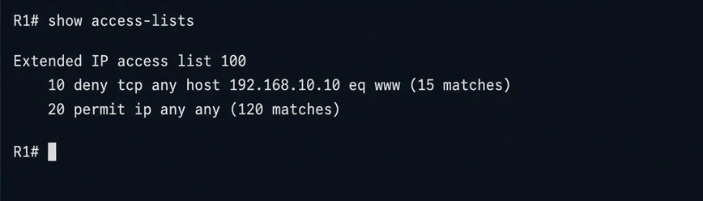
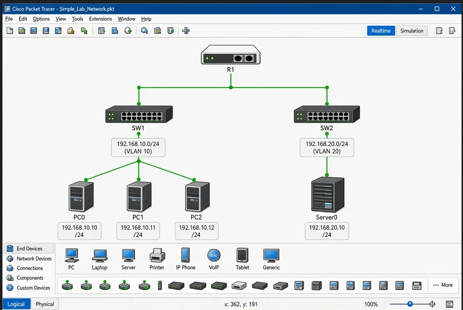

This guide is for learning. Run these commands only on your own lab or servers.
An access control list is an ordered list of permit and deny rules. The router reads it from the top and stops at the first match. Everything not permitted ends in an invisible deny.
Standard ACL (source only)
access-list 10 permit 192.168.10.0 0.0.0.255
interface g0/1
ip access-group 10 outExtended ACL (protocol and ports)
ip access-list extended WEB-ONLY
permit tcp 192.168.10.0 0.0.0.255 any eq 80
permit tcp 192.168.10.0 0.0.0.255 any eq 443
deny ip any any log
interface g0/0
ip access-group WEB-ONLY inVerify
show access-lists
show ip interface g0/0Place extended ACLs close to the source and standard ACLs close to the destination.
How the router reads an ACL
An access list is checked from the first line to the last, and the first match decides the result. There is an invisible deny at the end, so a list that contains only deny lines blocks everything. A very common mistake is writing the correct deny rule and forgetting a final permit for the traffic that should continue.
Wildcard masks
ACLs use wildcard masks, which are the opposite of subnet masks. A 0 means the bit must match and a 1 means it can be anything. For the network 192.168.10.0/24, the subnet mask is 255.255.255.0 and the wildcard is 0.0.0.255. For a single host use host 192.168.10.5 or a wildcard of 0.0.0.0. Writing a subnet mask by mistake is one of the most frequent reasons an ACL does nothing useful.
Choose standard or extended
A standard ACL looks only at the source address, so it should be placed close to the destination to avoid blocking more than you wanted. An extended ACL can match the protocol, source, destination and port, so it should be placed close to the source and stop unwanted traffic early. When you need to allow web but deny other traffic from a department network, extended is the right tool.
Direction matters
Inbound means traffic entering the interface and outbound means traffic leaving it, as seen from the router. The same list in the wrong direction will look correct and match nothing. Draw the path of one packet on paper and mark where it enters and leaves before you apply the list.
Edit with sequence numbers
Named lists support sequence numbers, so you can insert or remove one line without rebuilding everything.
ip access-list extended WEB-ONLY
5 permit udp 192.168.10.0 0.0.0.255 any eq 53
no 20
remark Allow DNS and web for the user VLANNumbered lists are harder to edit in older software, so a named list is easier to manage.
Verify with counters
After you apply a list, generate traffic and check the match counters.
show access-lists
clear access-list counters
show ip interface g0/0 | include access listIf the counter on a permit line does not move, the traffic is not reaching that line, which usually points to a wrong direction, wrong interface or wrong mask. Testing one ping and one web request from a PC in Packet Tracer shows the difference at once, and the ICMP reply may also be blocked by your own deny rule, so allow it if you want ping to work in both directions.
Here is the output of show access-lists from my lab router after some test traffic. Each line shows how many packets it has matched, so you can see which rule is doing the work.

Router traffic and remote access
An ACL on an interface filters traffic passing through the router, not traffic that the router creates itself. To limit who can reach the router for management, use an access-class on the VTY lines.
line vty 0 4
access-class 10 inGood habits
Keep a copy of the configuration before you apply a list, add remarks, use logging on deny lines for testing, and keep the number of rules small. In a lab, try each rule separately before you combine them.
Practice in Packet Tracer
Build one router with two networks, for example a user VLAN and a server network. First confirm that ping and web access work. Apply an extended ACL that allows only web traffic from the users, then test again and read the counters. Move the list to the wrong direction and see what changes. Save each version of the configuration, because comparing them teaches you more than a single working result.
This is the small lab I use for ACL practice: one router, two switches, two VLAN subnets and a few hosts. It is simple enough to test one rule at a time.

Read next
- VLANs Explained with Cisco Commands
- OSPF Single-Area Configuration in Packet Tracer
- HSRP and EtherChannel: Redundancy Basics
- Cisco Port Security Basics